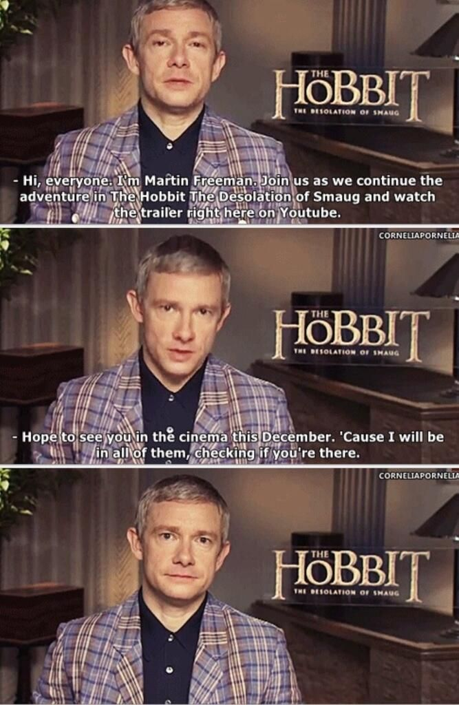
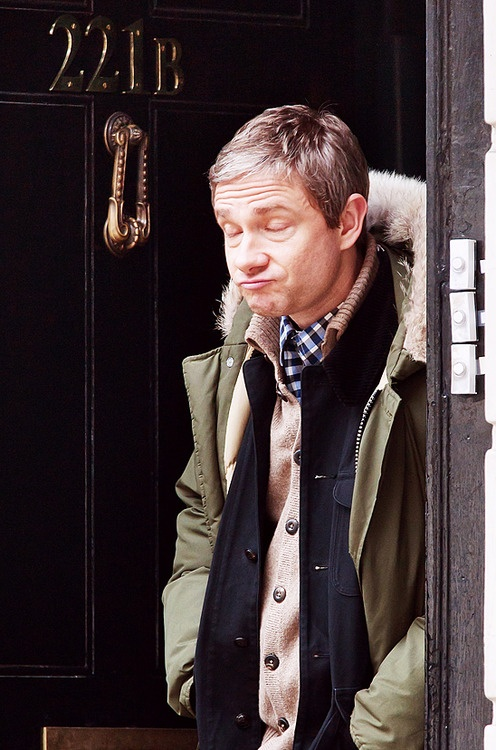
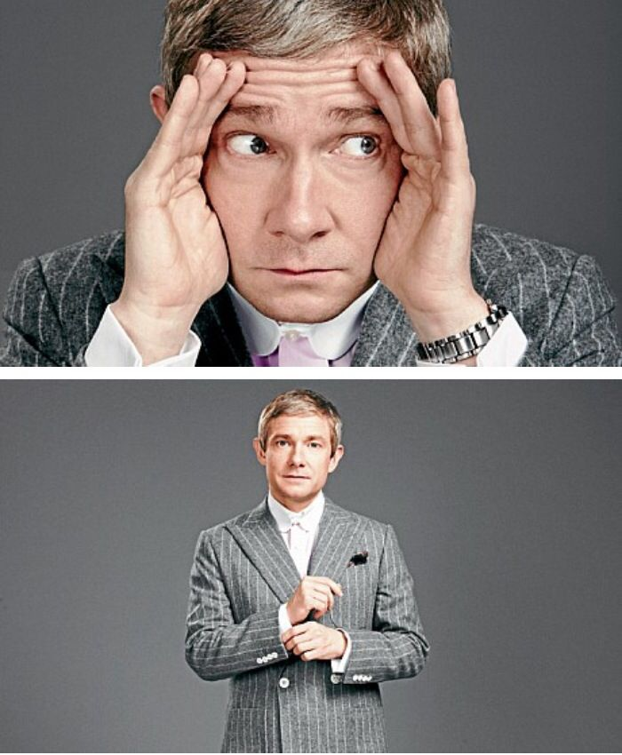
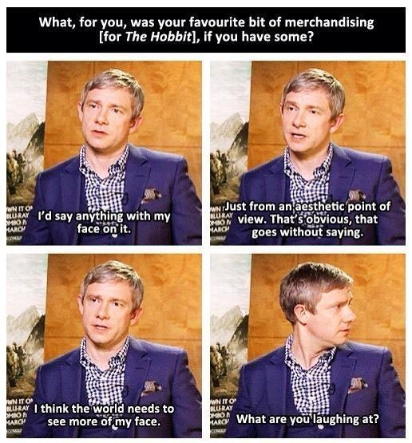
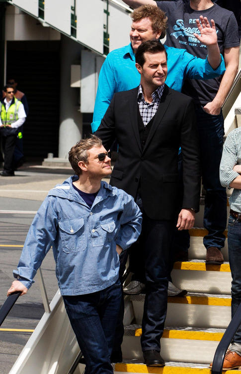
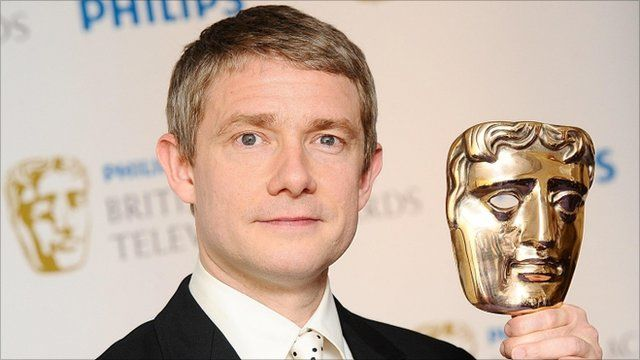
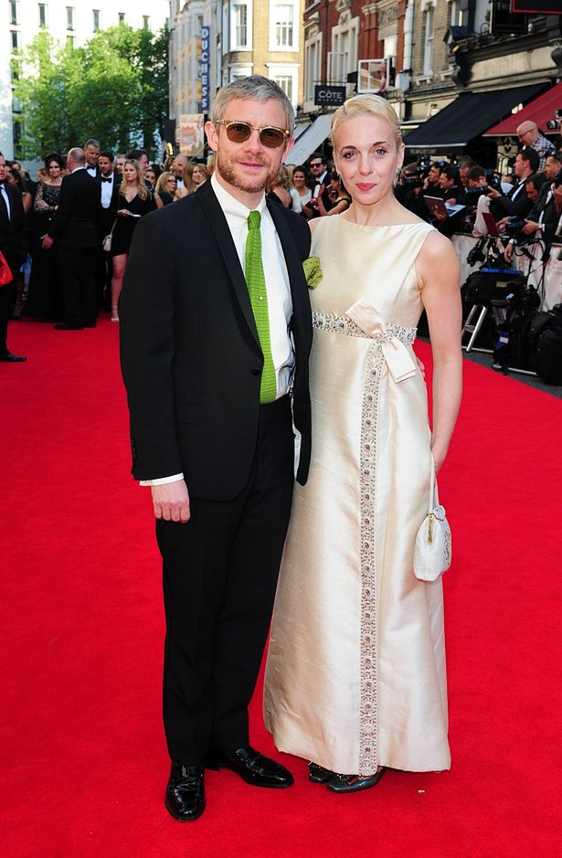
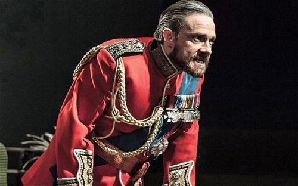
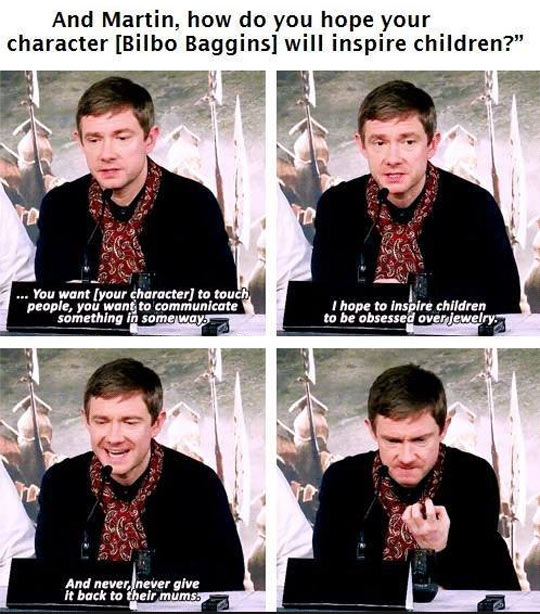
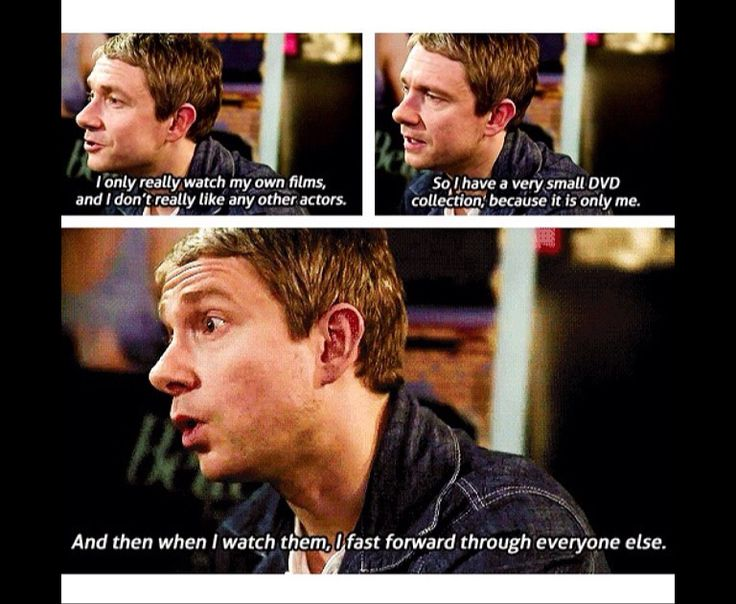

Photos
Martin Freeman attends a screening of the Sherlock 2016 Christmas Special at Ham Yard Hotel on December 19, 2016 in London, England.

Martin sees all

Sassy Freeman on the Sherlock set

Looks good in a suit

Martin Freeman said,
It’s kind of weird when everywhere you go there are pictures of you. It’s certainly unusual for any film I’ve ever done. But it’s a good picture of me and at least I’m happy with it, because if it was a picture I hated I wouldn’t go out.

Classic Martin

Martin Freeman wins best supporting actor at the Television Bafta awards presented in London

Martin and the gorgeous Abby Abbington

Freeman as title role of Richard III at Trafalgar Studios 2014

Truly Martin Freeman was the perfect choice for the role of Bilbo Baggins

Oh Martin...